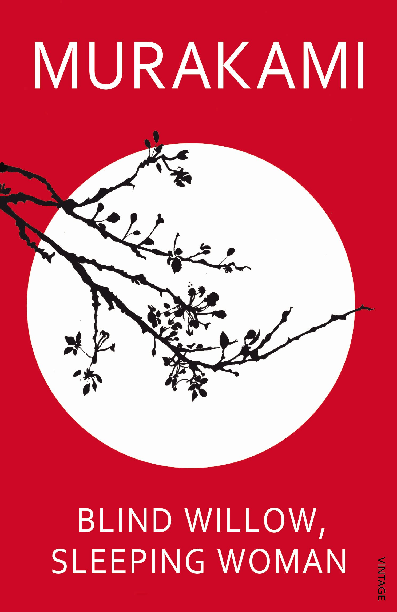
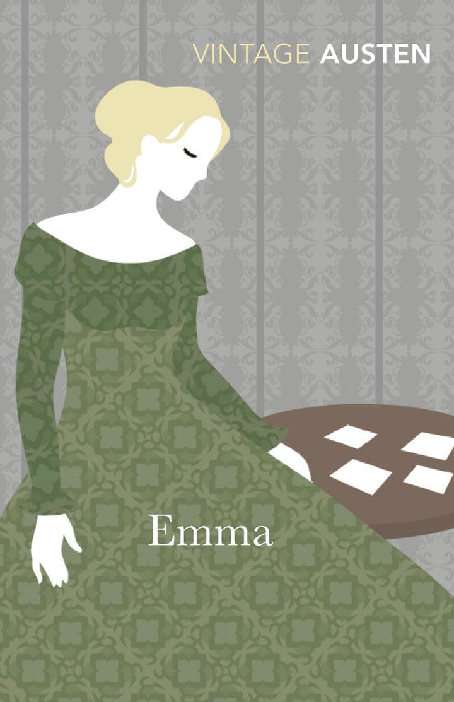
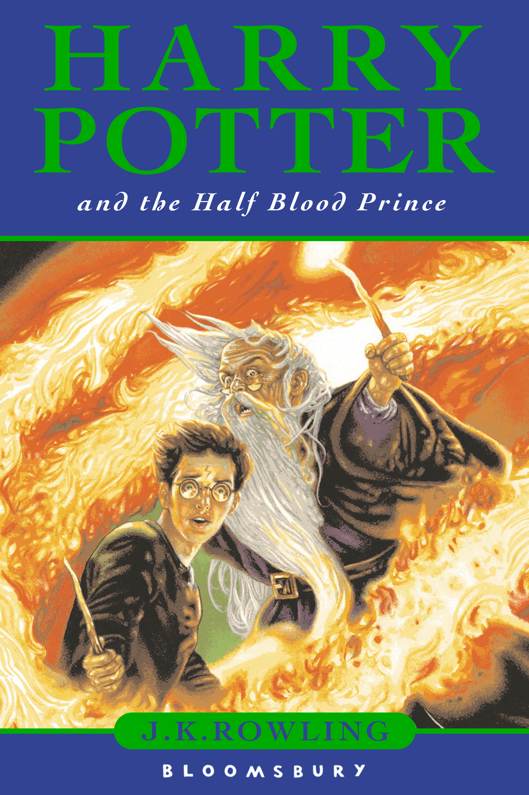

After working in the floristry industry for 4 years I have decided to take the next logical step and become a developer.
My Favorite Books |
|
|---|---|
|  |
Blind Willow, Sleeping Woman by MurakamiCollection of twenty-four stories that generously expresses Murakami’s mastery of the form. From the surreal to the mundane, these stories exhibit his ability to transform the full range of human experience in ways that are instructive, surprising, and relentlessly entertaining. Here are animated crows, a criminal monkey, and an iceman, as well as the dreams that shape us and the things we might wish for. |
|  |
Emma by Jane AustenClever, rich - and single - Emma Woodhouse is perfectly content with her life and sees no need for either love or marriage. Nothing, however, delights her more than interfering in the romantic lives of others. But when she ignores the warnings of her good friend Mr. Knightley and attempts to arrange a suitable match for her protegee Harriet Smith, her carefully laid plans soon unravel and have consequences that she never expected. With its imperfect but charming heroine and its witty and subtle exploration of relationships, Emma is often seen as Jane Austen's most flawless work. |
|  |
Harry Potter and The Half Blood Prince by JK RowlingWhen Harry Potter and the Half-Blood Prince opens, the war against Voldemort has begun. The Wizarding world has split down the middle, and as the casualties mount, the effects even spill over onto the Muggles. Dumbledore is away from Hogwarts for long periods, and the Order of the Phoenix has suffered grievous losses. And yet, as in all wars, life goes on. |